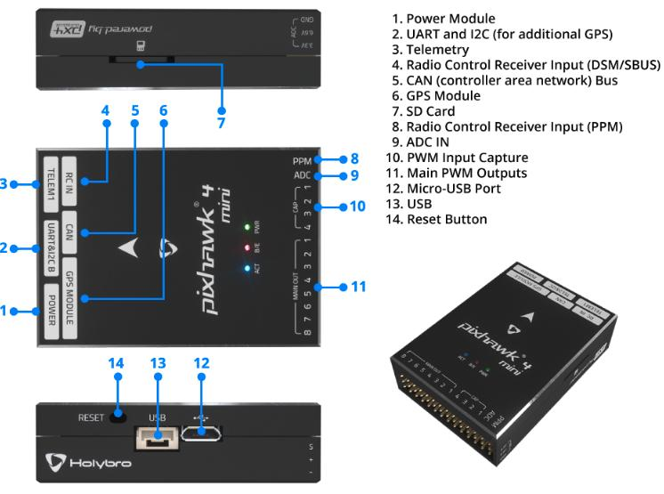

Pixhawk4-Mini Flight Controller¶
The Pixhawk4-Mini autopilot is sold by Holybro
Features¶
STM32F765 microcontroller
Two IMUs: ICM20689 and BMI055
MS5611 SPI barometer
builtin I2C IST8310 magnetometer
microSD card slot
5 UARTs plus USB
11 PWM outputs
Two I2C and one CAN ports
External Buzzer
External safety Switch
Dedicated power input port for external power modules
Pinout¶
{kind=link}
UART Mapping¶
SERIAL0 -> USB
SERIAL1 -> USART2 (Telem1)
SERIAL2 -> UART4 (Telem2)
SERIAL3 -> UART1 (GPS)
SERIAL4 -> UART6 (RCIN port)
SERIAL5 -> UART7 (debug)
The SERIAL1 port has RTS/CTS pins, the other UARTs do not have RTS/CTS.
The RCIN port can be used as RX or TX as a general UART using the SERIAL4_OPTIONS bits to swap pins. It is not used for RC input (the PPM pin is used for RC input)
The UART7 connector is inside the case and labelled as debug, but is available as a general purpose UART with ArduPilot.
RC Input¶
The PPM pin, which by default is mapped to a timer input, can be used for all ArduPilot supported receiver protocols, except CRSF/ELRS and SRXL2 which require a true UART connection. However, FPort, when connected in this manner, will only provide RC without telemetry.
To allow CRSF and embedded telemetry available in Fport, CRSF, and SRXL2 receivers, the RCIN port’s RCIN pin can also be configured to be used as true UART RX or TX pin for use with bi-directional systems by setting the SERIAL4 parameters appropriately.
To use RCIN for bi-directional RC and Telemetry protocols, SERIAL4_PROTOCOL must be set to “23”, and:
PPM is not supported.
SBUS/DSM/SRXL connects to the RCIN pin, but SBUS requires that the SERIAL4_OPTIONS be set to “3” to invert the signal.
FPort requires connection to RCIN and SERIAL4_OPTIONS be set to “15”.
CRSF requires connection to both RX and TX of a UART, so the RCIN port and pin cannot be used. Instead either SERIAL1 (UART2), SERIAL2 (UART4), or SERIAL3 (UART1 must be used. Set its protocol to “23” and options to “0”.
SRXL2 requires a connection to RCIN and automatically provides telemetry. Set SERIAL4_OPTIONS to “4”.
Any UART can be used for RC system connections in ArduPilot also, and is compatible with all protocols except PPM. See Radio Control Systems for details.
PWM Output¶
The Pixhawk4-Mini supports up to 11 PWM outputs. All 11 outputs support all normal PWM output formats. All outputs except numbers 7 and 8 support DShot.
The first 8 outputs are labelled “MAIN OUT” on the case. The next 3 outputs are labelled CAP1 to CAP3 on the case. The CAP4 pin cannot be used as a PWM output.
The 11 PWM outputs are in 4 groups:
PWM 1, 2, 3 and 4 in group1
PWM 5 and 6 in group2
PWM 7 and 8 in group3
PWM 9, 10 and 11 in group4
Channels within the same group need to use the same output rate. If any channel in a group uses DShot then all channels in the group need to use DShot.
Battery Monitoring¶
The board has a dedicated power monitor port with a 6 pin connector. The correct battery setting parameters are dependent on the type of power module which is connected.
Compass¶
The Pixhawk4-Mini has a builtin IST8310 compass. Due to potential interference the board is usually used with an external I2C compass as part of a GPS/Compass combination.
GPIOs¶
The 11 PWM ports plus the CAP4 ports can be used as GPIOs (relays, buttons, RPM etc). To use them you need to limit the number of these pins that is used for PWM by setting the BRD_PWM_COUNT to a number less than 11. See GPIOs page for more information.
For example if you set BRD_PWM_COUNT to 8 then CAP1, CAP2 and CAP3 will be available for use as GPIOs, in addition to CAP4.
The numbering of the GPIOs for PIN variables in ArduPilot is:
PWM1 50
PWM2 51
PWM3 52
PWM4 53
PWM5 54
PWM6 55
PWM7 56
PWM8 57
In addition the 4 pins on the servo rail marked CAP1 to CAP4 can be used as GPIOs. These are available as GPIOs in ArduPilot using the following GPIO numbers:
CAP1 58
CAP2 59
CAP3 60
CAP4 61
Analog inputs¶
The Pixhawk4-Mini has 4 analog inputs
ADC Pin0 -> Battery Voltage
ADC Pin1 -> Battery Current Sensor
ADC Pin10 -> ADC 5V Sense
ADC Pin11 -> ADC 3.3V Sense
Connectors¶
Unless noted otherwise all connectors are JST GH
TELEM port¶
| Pin | Signal | Volt |
|---|---|---|
| 1 (red) | VCC | +5V |
| 2 (blk) | TX (OUT) | +3.3V |
| 3 (blk) | RX (IN) | +3.3V |
| 4 (blk) | CTS | +3.3V |
| 5 (blk) | RTS | +3.3V |
| 6 (blk) | GND | GND |
GPS port¶
| Pin | Signal | Volt |
|---|---|---|
| 1 (red) | VCC | +5V |
| 2 (blk) | SERIAL3 TX (OUT) | +3.3V |
| 3 (blk) | SERIAL3 RX (IN) | +3.3V |
| 4 (blk) | SCL | +3.3 (pullups) |
| 5 (blk) | SDA | +3.3 (pullups) |
| 6 (blk) | SafetyButton | +3.3V |
| 7 (blk) | SafetyLED | +3.3V |
| 8 (blk) | VDD 3.3 (OUT) | +3.3V |
| 9 (blk) | Buzzer | +3.3V |
| 10 (blk) | GND | GND |
TELEM2 & I2CB port¶
| Pin | Signal | Volt |
|---|---|---|
| 1 (red) | VCC | +5V |
| 2 (blk) | TX (OUT) | +3.3V |
| 3 (blk) | RX (IN) | +3.3V |
| 4 (blk) | SCL I2C2 | +3.3V |
| 5 (blk) | SDA I2C2 | +3.3V |
| 6 (blk) | GND | GND |
POWER1¶
| Pin | Signal | Volt |
|---|---|---|
| 1 (red) | VCC | +5V |
| 2 (red) | VCC | +5V |
| 3 (blk) | CURRENT | up to +3.3V |
| 4 (blk) | VOLTAGE | up to +3.3V | 5 (blk) | GND | GND | 6 (blk) | GND | GND |
RCIN port¶
| Pin | Signal | Volt |
|---|---|---|
| 1 (red) | VCC | +5V |
| 2 (blk) | RCIN (IN) | +3.3V |
| 3 (blk) | RSSI (IN) | +3.3V |
| 4 (blk) | VDD3.3 | +3.3V |
| 5 (blk) | GND | GND |
Debug¶
The Pixhawk4 supports SWD debugging on the debug port
| Pin | Signal | Volt |
|---|---|---|
| 1 (red) | FMU VDD 3.3 | +3.3V |
| 2 (blk) | UART TX Debug (OUT) | +3.3V |
| 3 (blk) | UART RX Debug (IN) | +3.3V |
| 4 (blk) | SWDIO | +3.3V |
| 5 (blk) | SWCLK | +3.3V |
| 6 (blk) | GND | GND |
Loading Firmware¶
The board comes pre-installed with an ArduPilot compatible bootloader, allowing the loading of xxxxxx.apj firmware files with any ArduPilot compatible ground station.
Firmware for this board can be found here in sub-folders labeled “PH4-mini”.
Acknowledgements¶
Thanks to [PX4](https://docs.px4.io/en/flight_controller/pixhawk4_mini.html) for images used under the [CC-BY 4.0 license](https://creativecommons.org/licenses/by/4.0/)
[copywiki destination=”plane,copter,rover,blimp”]